Step by step, with the screens in front of you: from signing in to your first video, your first brand, and videos that post every day.
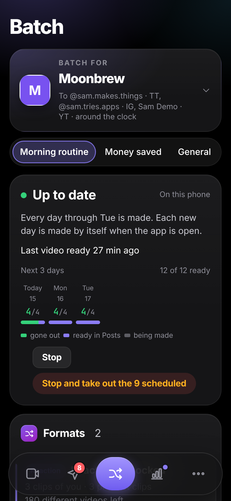
For students and everyone using the CutterThe names and numbers in the screenshots are examples.
Start here
The Cutter is the app on your phone that turns your raw takes into finished videos and posts them for you. This guide shows you, screen by screen, what to tap.
How to read this guide
Every screenshot has pink numbers on it. They match the steps next to it: 1 is what you tap first, 2 next, and so on. Steps with a • have nothing to point at on the screenshot.
Do the lessons of chapter 1 once, in order. After that, use the guide like a menu: find what you want to do in the contents.
What you need before you start
An iPhone on iOS 26 or newerOr a computer with Chrome. Older iPhones can't make videos in the Cutter.
Your Cutter loginA login and password, or the one-time sign-in link you were sent.
A Postiz or Buffer accountWith your TikTok, Instagram and YouTube accounts connected to it. The Cutter posts through it.
An Anthropic API keyFrom console.anthropic.com. It lets Claude write your captions and headlines.
What a normal day looks like
1. FilmYour takes, in the Cutter or with your camera.
2. Add themAdd videos - they find their brand.
3. CheckLook over each one's captions.
4. ApproveIn Posts, before they go out.
5. LookAt Analytics, to see what works.
Contents
1Get set upSign in, your home screen, connect posting, your voice, record
2Make your first videoAdd, check, fix, approve - and Cut only
3Set up a brandName and logo, its look, accounts and times, approval, captions, the Bank
4Approve and postTo approve, times, music, what went out, New post, stopping, pausing
5Run a batchFormats, your clips, checking them, hooks, how many a day, Start
6FormatsOne script, filmed again and again
7Use your numbersMore a day, best hooks, accounts gone cold, when to post
8Trial reels Owner
9Motion graphics and Warm-ups
10Settings you may want to change
If something goes wrong
Owner marks what only the main login sees, and the logins it gives access to.
1
Get set up
Do these five lessons once, in this order. About 10 minutes.
Sign in
Open the Cutter and sign in with your login.
1Type your login.
2Type your password.
3Tap Sign in.
Got a one-time sign-in link instead? Open it, choose your password twice, tap Sign in. The link works once.
Then put the Cutter on your Home Screen: in Safari tap Share → Add to Home Screen, and from now on open it from that icon.
Why the Home Screen? On an iPhone, notifications only work in the app opened from the Home Screen.
Your home screen
Know where everything is.
1Set up your voice - a lesson below does it with you.
2Record films a video in the Cutter.
3Add videos takes videos from your camera roll.
4The tabs: Videos (here), Posts (the red number is how many wait for you), Batch, Analytics and More (brands, the Bank, Settings and the rest).
At the top, Today counts the videos going out today. Tap it to open Posts.
Connect your posting
Link your Postiz (or Buffer) and your Claude key, so your videos can post.
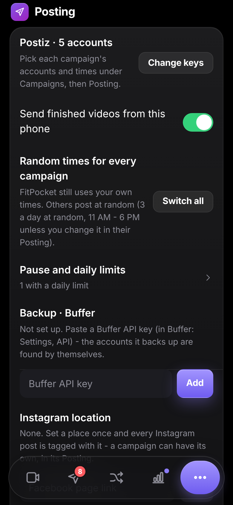
More → Settings → Posting
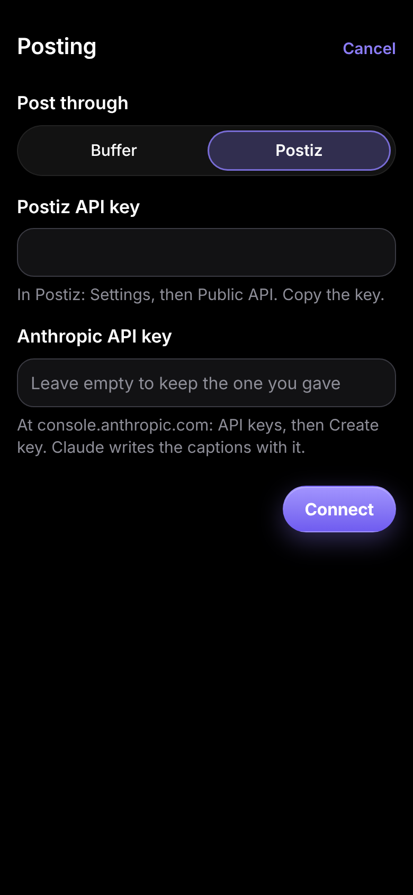
Your keys
Go to More → Settings.
1Tap Set up (or Change keys).
2Leave Send finished videos from this phone on.
3Pick Postiz or Buffer.
4Paste its API key. Postiz: Settings → Public API. Buffer: Settings → API.
5Paste your Anthropic API key.
6Tap Connect.
Use your own keys. The Cutter posts to whatever accounts the key holds - never use someone else's.
Then scroll down to Notifications and tap Turn on, so you know when posts wait for you.
Set up your voice
45 seconds, once, so the cuts never touch your words.
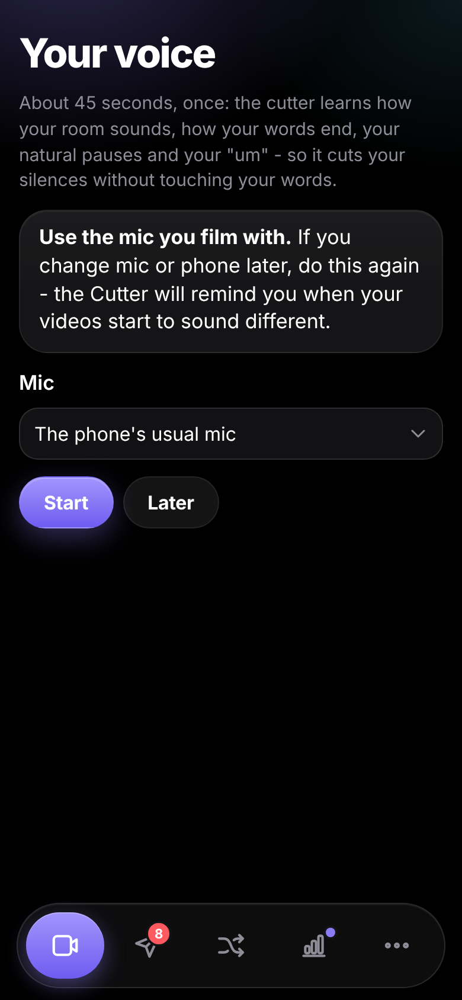
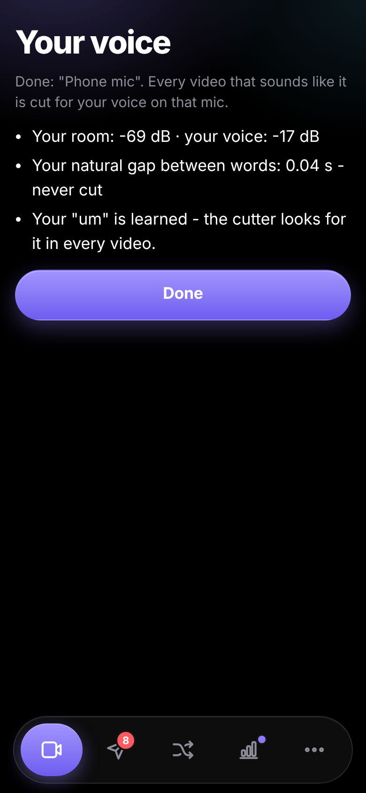
On Videos, tap Set up.
1Pick the mic you film with.
2Tap Start.
Stay quiet for 3 seconds.
Read the text out loud at your normal speed, stopping where it says pause. Scroll a little and tap Done reading.
Say a few "um"s, tap Done. Take one breath.
3Tap Done.
Do it where you film, with that mic. New mic later? Do it again - the app reminds you.
Record a video in the Cutter
Film straight into the app - no camera roll, no waiting.
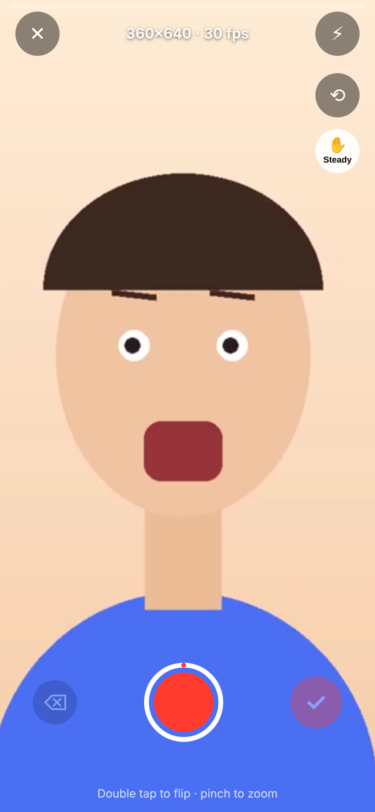
On Videos, tap Record.
1Tap the red button to film. Tap it again to pause, again to film more.
2Flip the camera (or double tap the screen). Pinch to zoom.
3Tap ✓ when you are done.
Didn't like the last part? Tap ⌫ at the bottom left to delete it.
Your video goes straight to your list on Videos, and opens for its check as soon as it is ready.
2
Make your first video
Add a take, check it, approve it. This is what you will do every day.
Add your videos
Add all of today's takes at once - each finds its brand by itself.
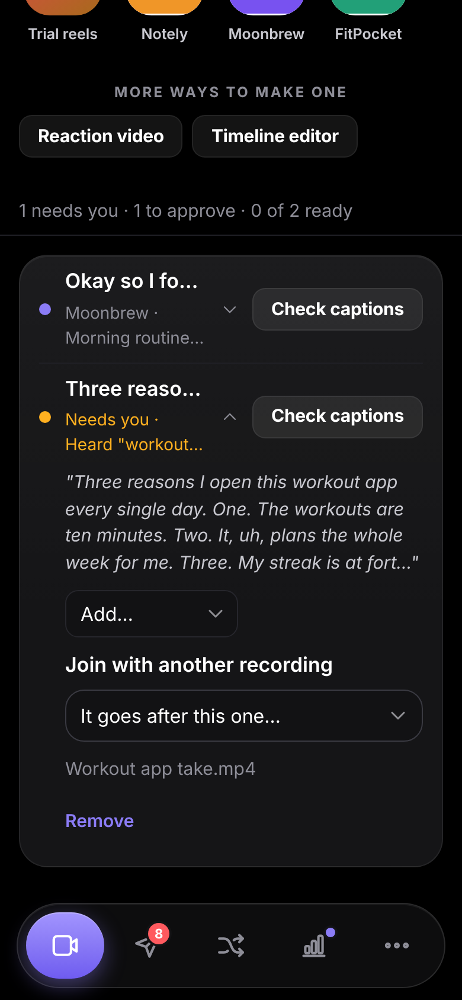
On Videos, tap Add videos and pick your takes.
Wait while each one says "Listening…".
1When a video says Check captions, it is ready for you. Tap it.
2Needs you means the Cutter isn't sure which brand or angle it is.
3Tap its Check captions too, and pick where it goes on the next screen.
iPhone: in the photo picker tap ⋯ → Options → Format → Current. Your videos arrive much faster.
Answer its questions
Make sure it goes to the right brand, with the right headline.
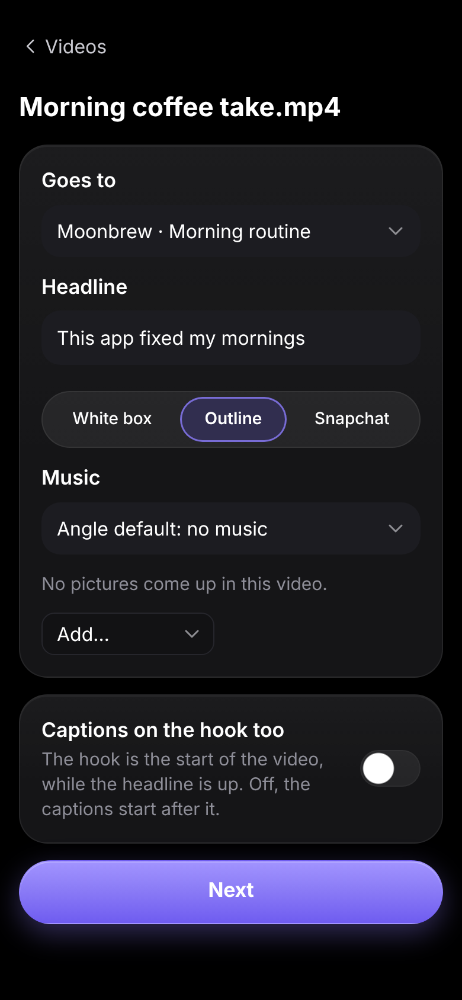
1Goes to: the brand and angle. Change it if it's wrong.
2Headline: the words at the top of the video. Change them, or pick a look under them (White box, Outline, Snapchat).
Pick Music if you want a song under your voice.
3Tap Next.
Check the captions and approve
Look only at what may be wrong, then approve.
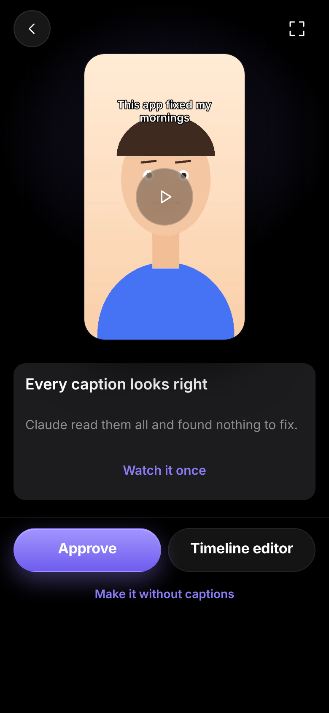
Claude reads your captions first. Any line that may be wrong shows on a card: tap ▶ Play it, then Good, or Fix to type it right.
"Every caption looks right" means nothing needs you.
1Tap Approve. Done.
2Want to change the cut, add text or a picture? Tap Timeline editor (next lessons).
After Approve, the video is made on your phone and goes to Posts. Keep the app open with the screen on while it is being made - about half a minute.
Fix the cut in the Timeline editor
Trim a part, bring something back, or speed a part up.
The editor
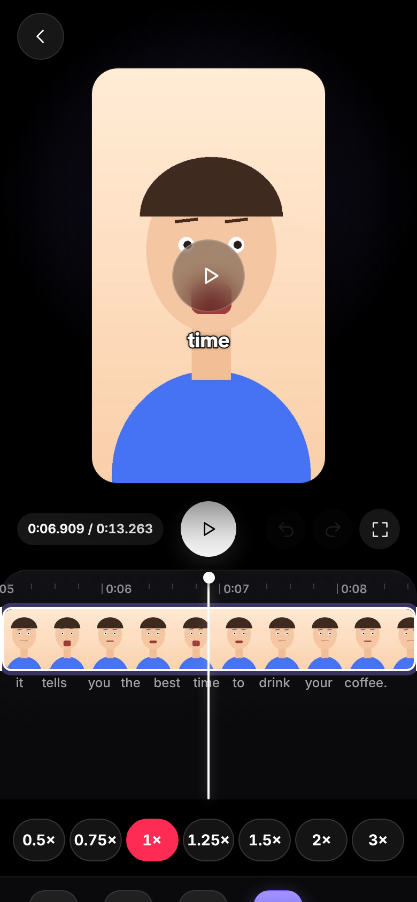
A part tapped → Speed
Slide the timeline left and right to move through the video.
1Tap a part: drag its white arrows inward to trim it, outward to bring back what was cut. Or Split / Delete.
2Text3Overlay4Sound5Captions6Headline - the next lessons.
7Talking too slowly? Tap a part → Speed → 1.25×.
Add your own words, a picture or a video
A call to action, a screenshot of the app, a logo.
Text
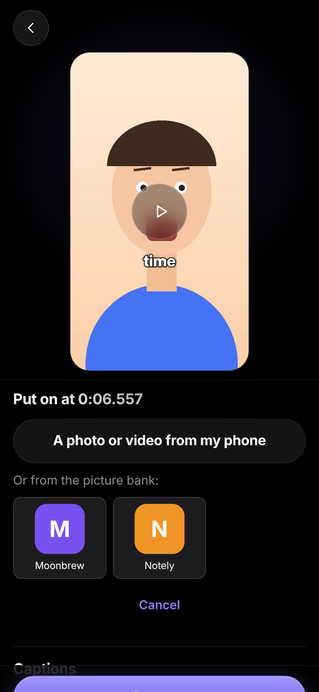
Overlay
Move the timeline to where it should come up, then tap Text.
1Type your words and pick their look.
2Drag them on the video to move them, pinch to make them bigger. Tap Done.
For a picture or video, tap Overlay:
3one from your phone,
4or one from your Bank.
Its bar on the timeline sets when it shows: drag its ends.
Sound works the same way: pick a sound effect or a song, and it plays from where its bar starts.
Read every caption, and change their look
For a longer video, or to change how captions look.
In the editor, tap Captions. All of them slide up over the video.
1Ask Claude to check them again (it says what it costs).
2Tap a line to type it right. ▶ plays it.
Under the lines: where captions sit, their style (One word, Highlight, Phrase) and their size. Your choice stays for the next videos.
When it is made
Find your finished video, save it, and see it in Posts.
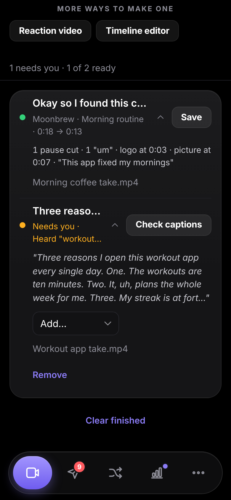
The row shows how long it was and how long it is now, for example "0:18 → 0:13".
1Save keeps a copy on your phone.
Open Posts to approve it (chapter 4).
"Not sent: no accounts are picked for this campaign" means its brand isn't set up to post yet - see chapter 3, "Where and when it posts".
Two more ways to make a video
Under More ways to make one, at the bottom of Videos.
Reaction video
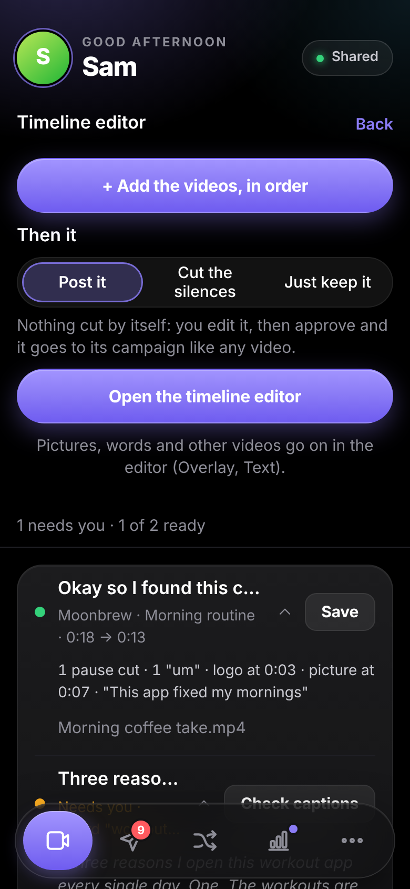
Timeline editor
Reaction video - your reaction, then the product:
1Pick the brand.
2Type the headline.
3Choose the product clip, then add your reaction clips. Each becomes a video.
Timeline editor - several clips, put together:
4Add your clips, in order.
5Choose what happens: post it, cut the silences, or just keep it.
6Tap Open the timeline editor.
Cut only: just take the silences out
A quick cut for a video that isn't for a brand. Nothing is posted.
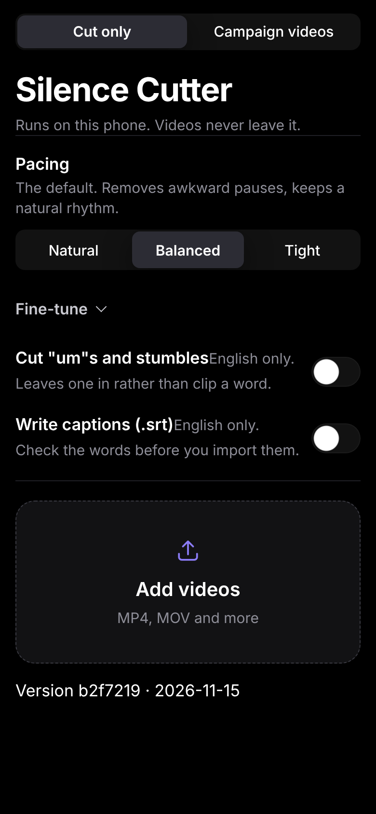
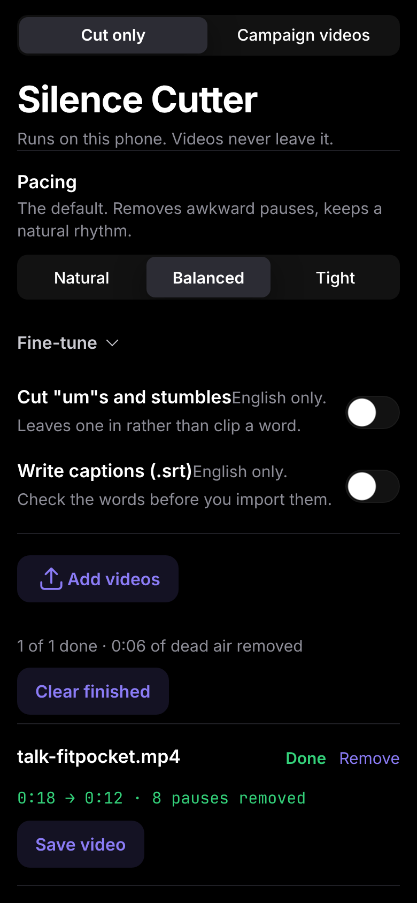
Go to More → Cut only.
1Pick how tight: Natural, Balanced or Tight.
2Tap Add videos.
3When it says Done, tap Save video.
Save before you leave Cut only - leaving clears its finished videos.
3
Set up a brand
A brand is called a campaign. Set it up once - its name, its look, where and when it posts - and every video follows it.
Create the brand
Its name, how you say it, and its logo.
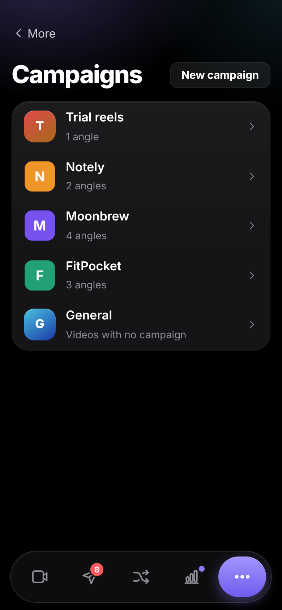
More → Campaigns
The brand
1Tap New campaign.
2Type the brand's name.
3Pick Talking head (you talk to the camera) or Reaction + product.
4Type the brand's name the way you say it - that's how the Cutter knows a video is for this brand.
5Choose its logo (a PNG with a clear background looks best).
6Tap Save campaign.
Give it a look
The headline, the logo, pictures, sounds and zooms on its videos.
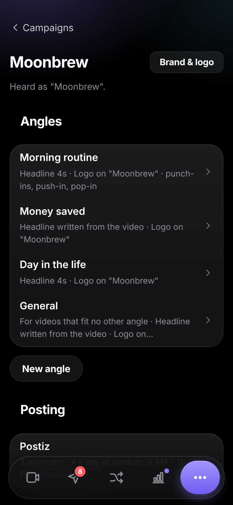
The brand's page
An angle's headline
1Brand & logo changes what you set above.
2Tap an angle - one kind of video for this brand.
3New angle adds another kind.
4Postiz: where and when it posts (next lesson).
5Type the headline,
6or let Claude write it from what you say.
7Pick its look. Then try the tabs: Pictures, Sound, Effects (play the examples), Clips. Tap Save angle.
Where and when it posts
Pick the accounts this brand posts to, and its times.
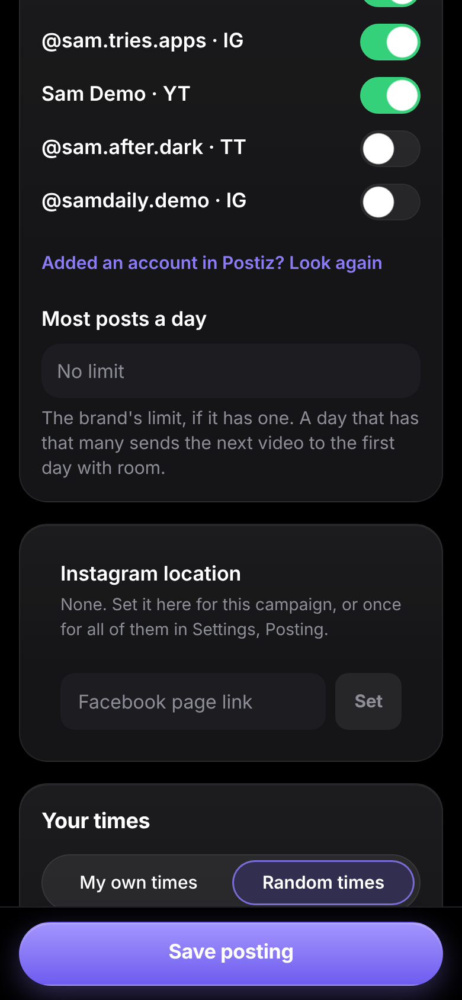
Your accounts
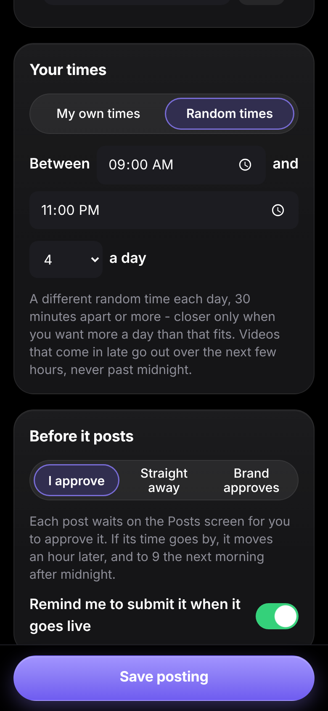
Your times
On the brand's page, tap Postiz under Posting.
1Switch on each account it posts to.
2Just added an account in Postiz? Tap Look again.
3The brand allows only so many posts a day? Type it here.
4Pick Random times (between two hours) or My own times.
5How many a day.
Who approves, and the caption
Follow the brand's rules without thinking about it.
Before it posts
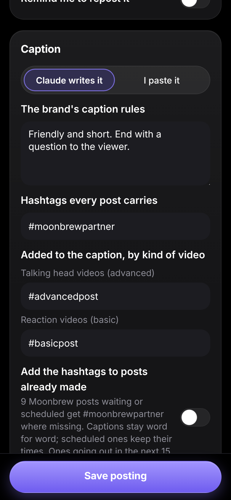
Caption
1I approve: each post waits for your OK in Posts. Straight away: no approving. Brand approves: you send it to the brand first.
2Paid only if you submit fast? Switch on the reminder.
3Claude writes it from what you say - or I paste it for a brand's tracking caption.
4Paste the brand's caption rules.
5The hashtags every post carries.
Tags for each kind of video
When a platform pays differently for talking videos and reactions.
1What talking videos get added to their caption (an "advanced" post).
2What reaction videos get (a "basic" post).
3Tap Save posting.
The Cutter adds the right one to each video for you.
Changed the hashtags after videos were made? Switch on "Add the hashtags to posts already made" before you save.
Your Bank
Logos, pictures, videos, songs and sound effects, ready for every video.
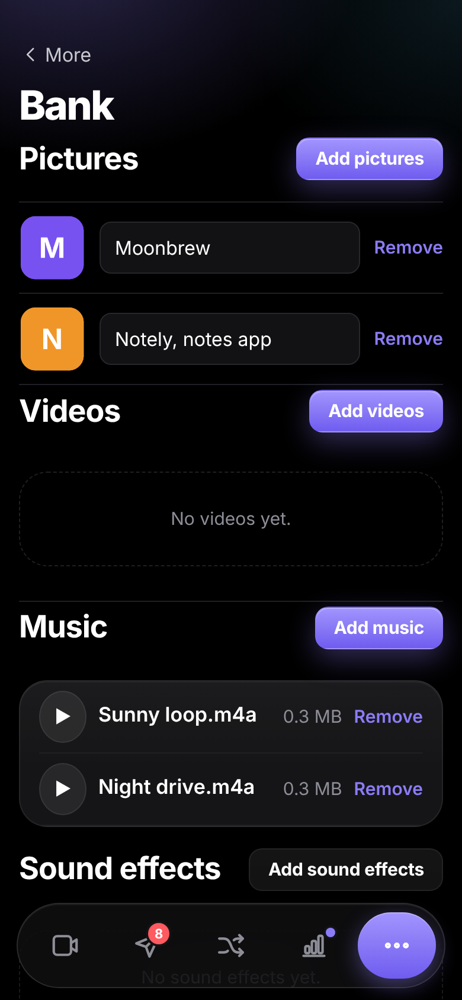
Go to More → Bank.
1Add pictures, then type the words that bring each one up - say those words in a video and the picture appears.
2Add music. Tap a song's name to rename it so you'll recognise it.
Videos and Sound effects work the same way.
4
Approve and post
The Posts tab: what waits for you on top, then what is coming, then what went out.
Approve your posts
Read the caption, watch, approve.
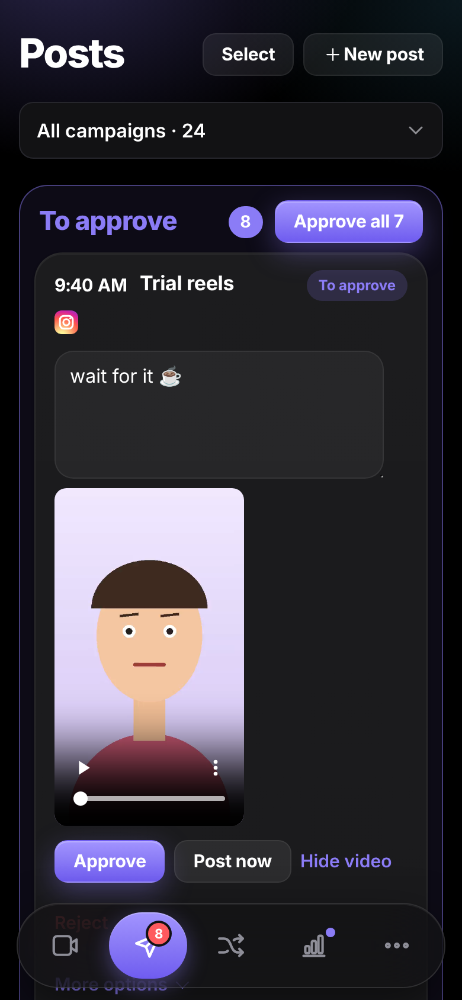
1Read the caption. Tap it to change it.
2Tap Approve: it posts at its time.
3Post now sends it right away.
4Approve all approves everything waiting.
Don't want it? Tap Reject.
Approve three videos of the same batch and the rest of that batch is approved for you.
Change its time, or add music
Under More options on any post waiting for you.
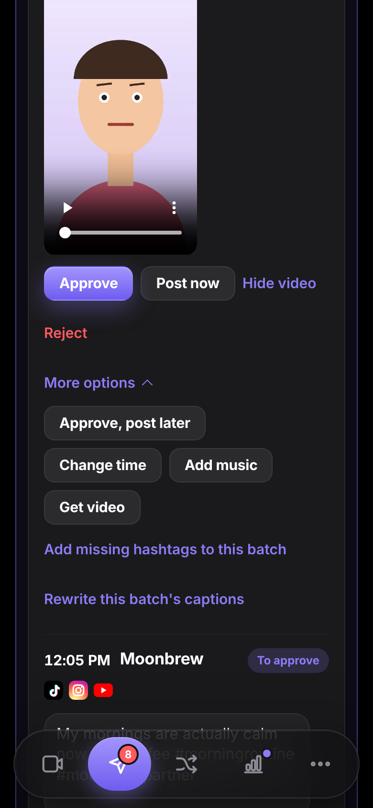
More options
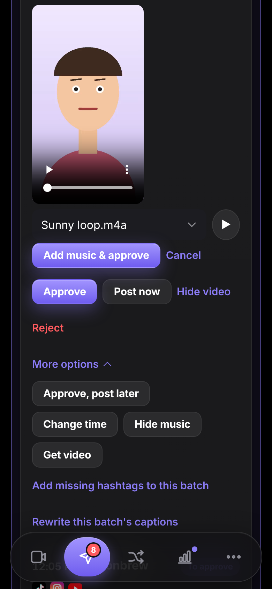
Add music
1Approve, post later: it waits until you tap Post.
2Change time: pick a new date and time.
3Add music:
4pick a song (▶ to hear it),
5tap Add music & approve.
See what's coming and what went out
Scroll down in Posts.
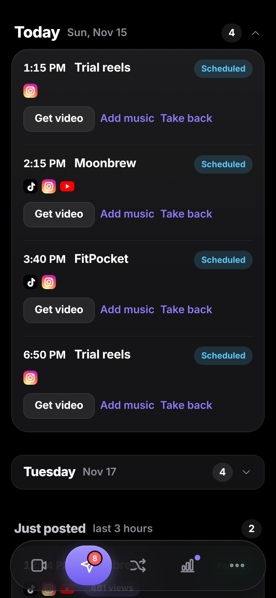
The days ahead
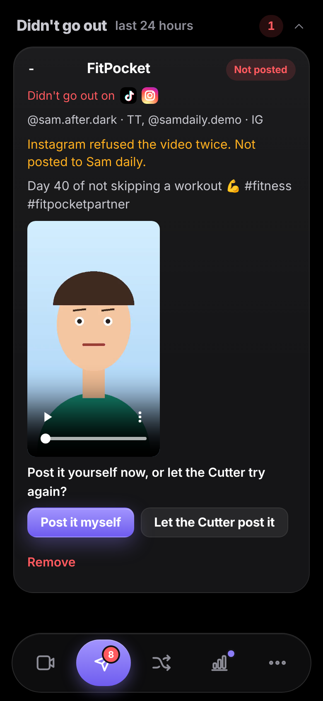
Didn't go out
1A block per day. Tap a post to see its accounts and caption.
2Take back puts it back in To approve.
At the very bottom, Didn't go out. Tap one:
3Post it myself: save the video, copy the caption, post it in the app.
4or Let the Cutter post it again.
A post that didn't go out is usually tried again for you, and you get a notification. Tap the notification to open it.
Post a video you already finished
A video edited somewhere else, posted with a Claude caption - no cutting, no approving.
+ New post
When
In Posts, tap + New post.
1Pick the brand.
2Optional: tell Claude something, like "post them tomorrow".
3Choose the videos. Claude writes each caption - change them if you like.
4Choose when: now, at a time, or Spread them (a few a day).
5Tap Post.
Stop posts
Take posts out before they go.
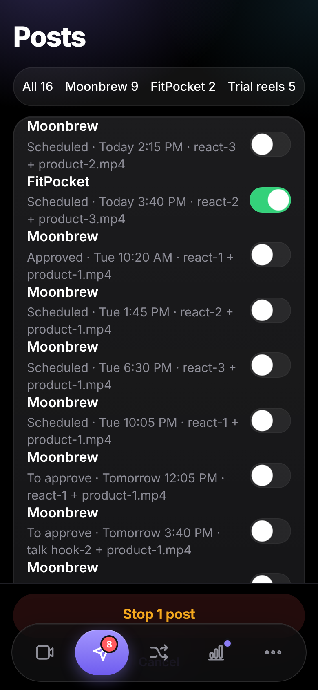
In Posts, tap Select.
1Tap a brand to tick all its posts - or tick posts one by one.
2Tap Stop. They won't go out.
Pause an account, or limit it
An account in trouble, or a platform that wants fewer posts.
More → Settings → Pause and daily limits.
1The most posts a day for a platform or one account (empty: no limit).
2The switch pauses it. Its videos wait and go out once you switch it back.
5
Run a batch
Film a set of clips once - hooks, reactions, product shots - and the Cutter mixes them into many different videos that post every day. One batch per brand.
Open the batch and add a format
A format is one kind of video in the batch: Reaction, Talking head or Green screen.
The Batch tab
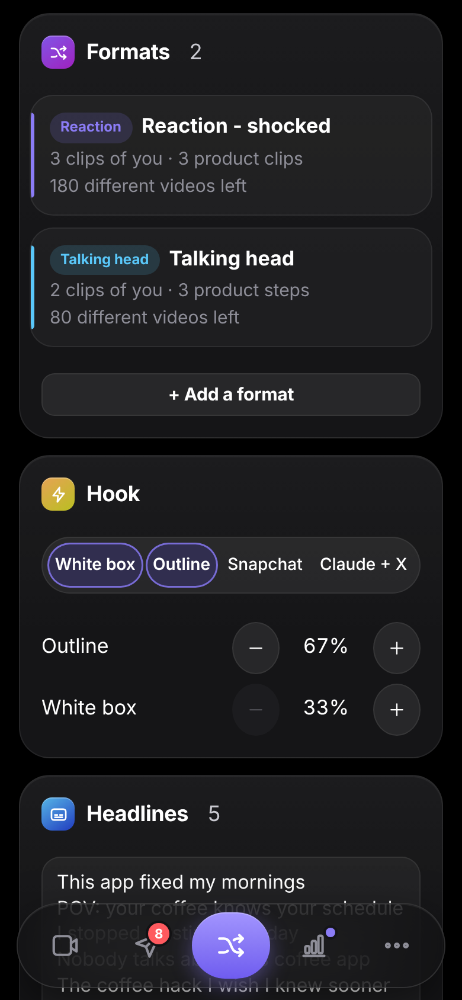
Formats
1Pick the brand.
2How the batch is doing (see "Keep an eye on it").
3Tap a format to open it.
4+ Add a format and pick its kind.
A reaction format: add your clips
Your silent reactions, then the product.
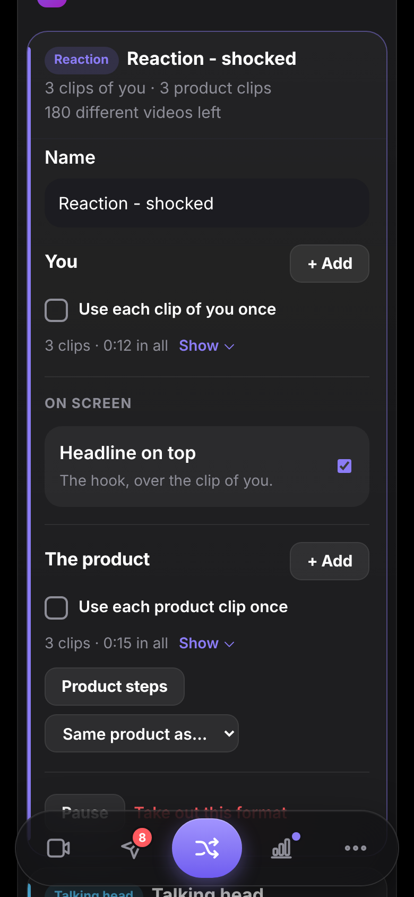
1+ Add your reaction clips.
2+ Add your product clips.
Want the product in parts, in order ("open the app", "your plan")? Tap Product steps.
The card shows how many different videos your clips make.
A talking head format: drop in your clips
Film all your hooks and product steps, drop them all in at once.
The format
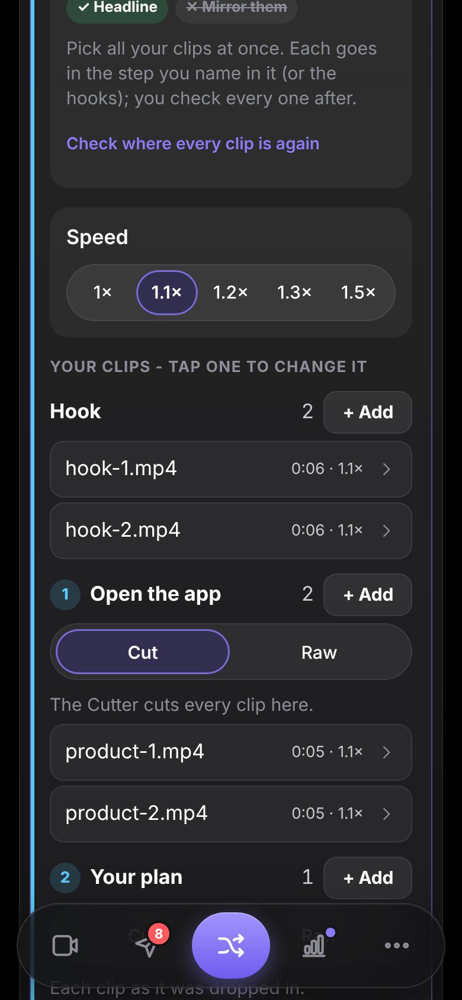
Your clips
1+ Drop in clips: pick them all. Say the step's name in each clip and it goes there.
2Change what the Cutter does with them: cut, zoom, captions, music, headline, mirror.
3Speak slowly? Pick 1.1× for every clip.
4Your clips in the order a video plays them - tap one to change it.
5Cut or Raw for all the clips of a step at once.
6+ Add one more clip to a step.
Check each clip, and fix one
Every clip you drop in is checked once before it's used.
Check clips
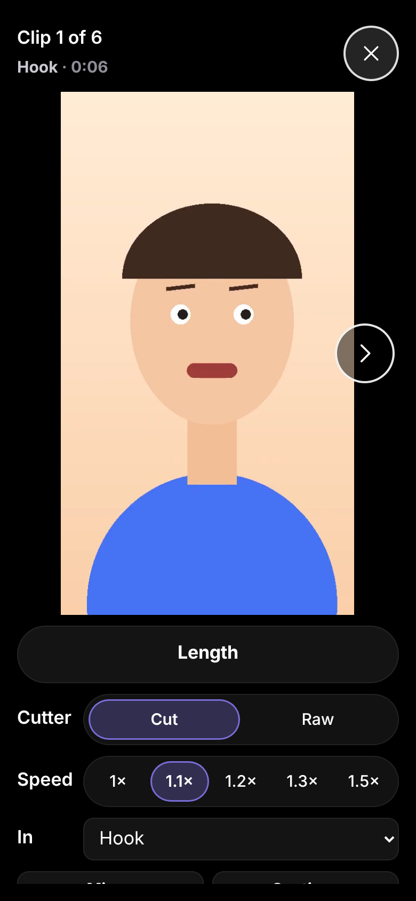
A clip tapped
Tap Check N clips. One clip at a time:
1tap the step it belongs to,
2mirror it if needed, fix its captions, then Approve & next clip.
Later, tap any clip in Your clips:
3✕ closes. 4› the next clip.
5Length: make it shorter or longer.
6Cut or Raw. 7Speed for this clip.
Product steps and their words
Name the steps, put them in order, add words on screen.
Steps and rules
Words on screen
1Names and order: name each step, ↑ ↓ to order them.
2Words on screen for a step.
3A brand that doesn't want clips reused? Tick Use each clip once.
4Tap where the words go (or a button),
5type them, pick their look and size. Save.
Hooks, headlines and music
What goes over the start of each video, and the songs under them.
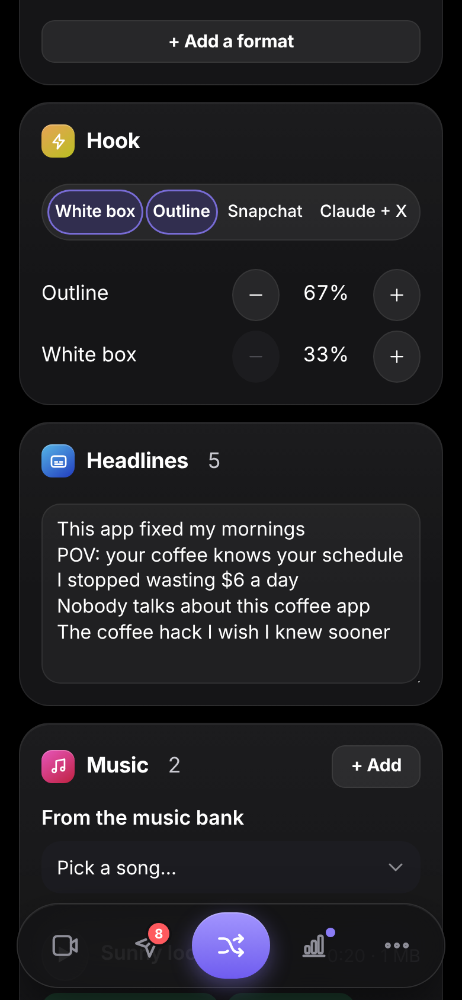
Hook and headlines
Claude + X
1Tap the headline looks you want. Several? The videos take turns.
2− / + gives a look more or fewer of the videos.
3Paste your headlines, one a line.
Claude + X puts two logos over the hook instead:
4tap each to choose its logo,
5then what goes under them.
Further down, Music → + Add your songs (or pick from the music bank).
How many a day, and Start
The one number you set. The Cutter does the rest.
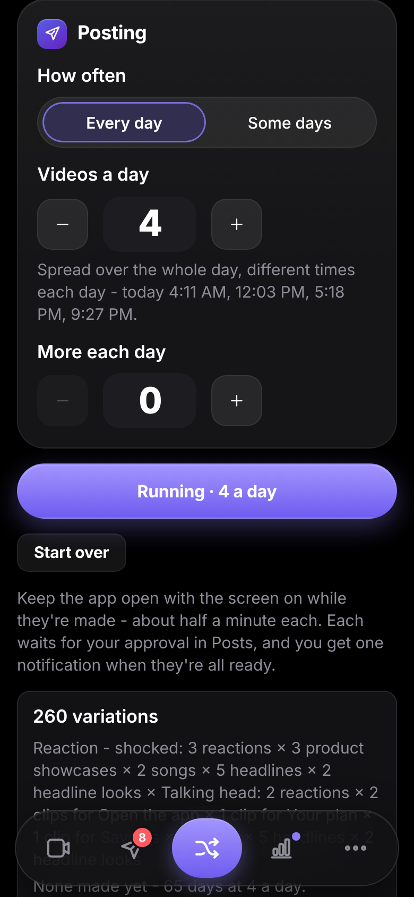
How often
Start
1Every day, or Some days (tap the days).
2− / + videos a day. Change it any time.
3Tap Start. It makes the next days now and keeps going.
4Start over: remakes what hasn't gone out with your latest changes.
On your phone, videos are only made while the Cutter is open. Leave it open with the screen on for a while - about half a minute a video.
Keep an eye on it
The card at the top of the Batch tab.
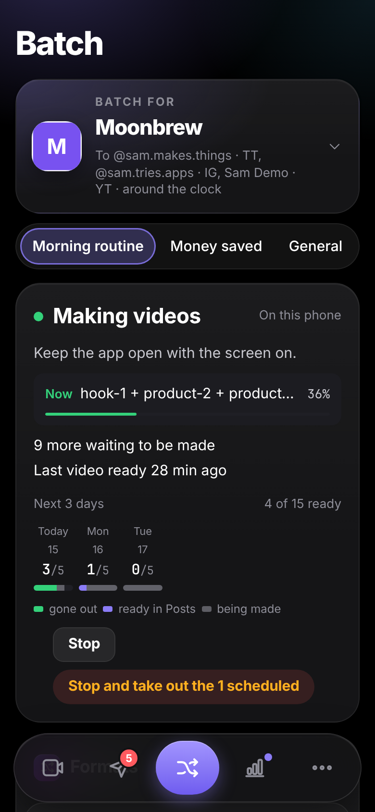
1Making videos, Up to date or About to make more - all fine. "Next 3 days" shows how many are ready for each day.
Make now puts the batch first if it is waiting.
Stop makes no more. Stop and take out the N scheduled also cancels what's waiting to go out.
"Time to film new ones" means every mix of your clips is used: film new clips and add them.
Post a good video again, with new songs
A video that did well, posted again with other songs from the batch.
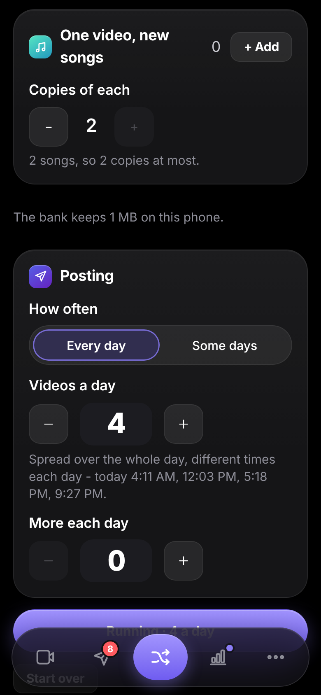
On the Batch tab, find One video, new songs.
1Tap + Add and pick the video.
Set Copies of each. Each copy gets another song and goes out at the batch's next free time.
You talk in it? Keep Your voice + song under. Otherwise Song only.
6
Formats
A short script you film again and again. The Cutter mixes your takes into many different videos for the brand to approve.
Write the script and add your takes
More → Formats → + New format, give it a name, set its look.
Type each line of the script, in order, and + Add line.
1+ Takes: add every take you filmed of that line.
2Look & clips: the headline and clips on every video of this format.
Tap Make N videos. When they are ready, Save all to my phone to send the brand.
The brand said yes? Tap Over the month, Schedule for the week or Next 5 days.
7
Use your numbers
The Analytics tab reads your views for you. A dot on the tab means it has a suggestion.
More a day, and your best hooks
Each brand's card in Analytics.
1Views are going up? Yes, 5 a day raises the batch at once. Not now? Tap Not now.
2Use the best hooks: more of the headlines, reactions and songs that get the most views. Back to even undoes it.
Under the headlines, Write more like the best - tap Add on the ideas you like.
An account stopped getting views
Usually a shadowban. Act on it in two taps.
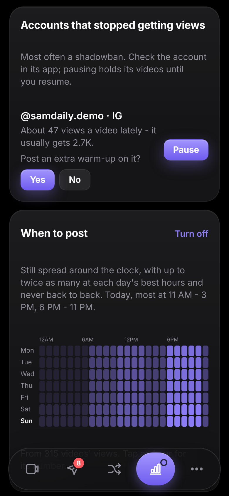
Check the account in its own app first.
1Pause holds its videos until you resume.
2Yes posts an extra warm-up on it (chapter 9).
When to post
Your best hours, from your own views.
The brighter the hour, the better your videos do then. Your batches post more at those hours.
Tap an hour for its number.
1Turn off to spread posts evenly through the day instead.
8
Trial reels Owner
Only on the owner's login and the logins it turns this on for. A reel that did well, posted again and again as Instagram Trial Reels - shown to people who don't follow you.
Start a Trial loop
More → Trial reels.
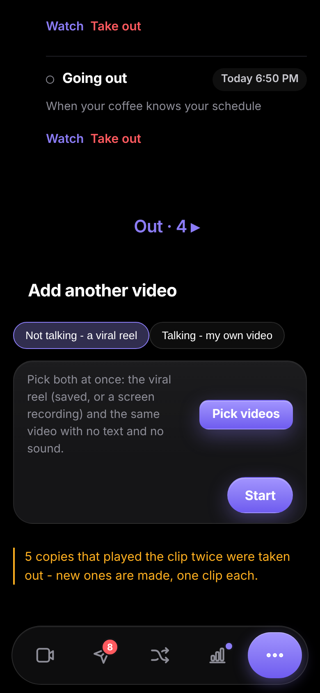
1Not talking - a viral reel, or Talking - my own video (with songs from your Bank).
More than one Instagram account? Pick the one they go to.
2Pick videos: the reel and the same video with no text and no sound - both at once.
3Tap Start, then set how many a day.
Approve the first copies in the list below - after three, the rest go by themselves.
Instagram needs a public professional account for trial reels. Use your own Postiz key - never Buffer, which would post them to your followers.
9
Motion graphics and Warm-ups
Add motion graphics to a talking video
Claude plans cards, numbers and lists around what you say. You check the plan before anything is made.
Pick a look
The plan
More → Motion graphics.
1Pick a look (or let Claude pick).
2Say what you want, if anything. Then pick your talking video and check its captions.
3On the plan, tap Play to watch it over your video.
Tap a moment in the list to change its words or take it out, or tell Claude what to change at the bottom.
Tap Make the video, then Save / share.
Film warm-ups
Short no-talking posts that keep your accounts warm between videos.
Warm-ups
An idea
More → Warm-ups.
1Film N in one go: the app walks you through several ideas.
2+ Idea shares a new idea.
3Or read one idea and tap Film it. Its sound plays while you film; it stops by itself.
Under Where they go, switch warm-ups on for your brands and pick how many a week.
10
Settings you may want to change
More → Settings. The defaults are right for most people.
How tight the cut is, and wide videos
Under Cutting.
1Natural keeps short pauses, Tight takes almost all of them.
2Wide videos: Fit shows all of it, Fill crops it to fill the screen.
Under Captions, you can turn captions off, or leave out punctuation.
Light or dark, and tips
Under Appearance.
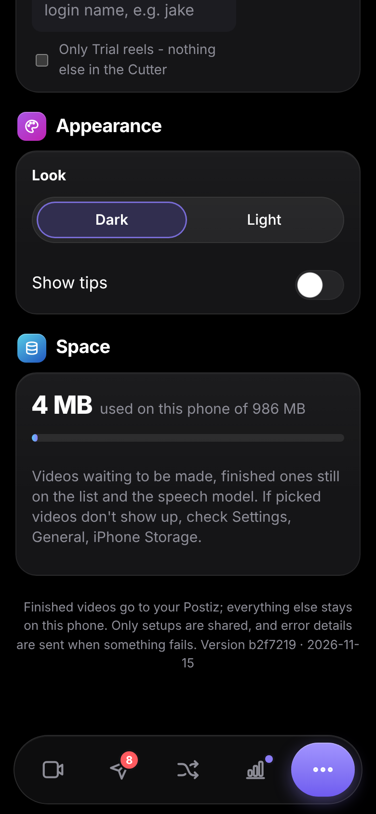
1Dark or Light.
2Show tips adds a short explanation under every setting.
Invite someone Owner
Under People: give a student their own Cutter.
Type their login name.
1Tap Make link, then Send. The link works once, for 48 hours. Their Cutter starts empty.
Each person's phones are listed under them - Remove one they no longer use.
If something goes wrong
What a message means and what to do.
"This browser can't make video yet"
Update your iPhone to iOS 26 or newer, or use Chrome on a computer.
Videos take long to arrive from the picker, or don't show up
In the picker tap ⋯ → Options → Format → Current. Check your free space: iPhone Settings → General → iPhone Storage.
"Another Cutter tab is working on the videos"
The Cutter is open twice (Safari and the Home Screen app). Close one.
"The phone's video maker stopped answering"
Restart your iPhone, then open the Cutter. Your videos carry on.
"…starting again to free it"
Nothing to do - it carries on by itself. Close other apps if it keeps happening.
My videos aren't being made
Keep the Cutter open with the screen on. It only makes videos while it is open.
The ends of my words are cut off
Set up your voice with the mic you film with (chapter 1). Try Pacing → Natural.
A caption is wrong
Fix it on the caption check, or in the editor's Captions. A brand name misheard? Check "Brand name, as you say it" on the brand.
"Not sent: no accounts are picked for this campaign"
Open the brand → Posting → switch on its accounts. Then tap Send on the video.
"Posting is not set up on this phone"
More → Settings → Posting → Set up, with your own keys.
A post "Didn't go out"
Open it in Posts: Post it myself, or Let the Cutter post it. If an account was disconnected, reconnect it in Postiz.
"Duplicate skipped"
That video was already posted for this brand. Tap Add anyway only if you really mean to post it twice.
No notifications
Open the Cutter from its Home Screen icon, then Settings → Posting → Notifications → Turn on. If it says they're off, allow them in iPhone Settings → Notifications.
Batch says "Waiting its turn"
Your own video is being made first. Tap Make now to put the batch first.
Batch says "Every mix of these clips was made before"
Film and add new clips.
"This login is on 3 phones already"
Ask the owner to remove a phone you no longer use.